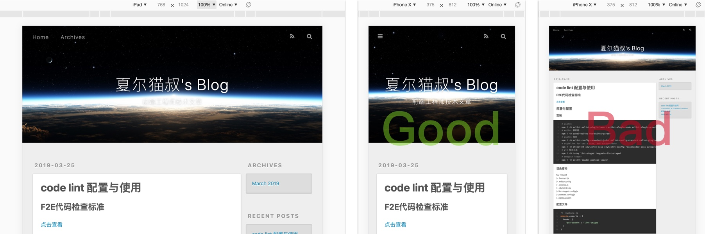
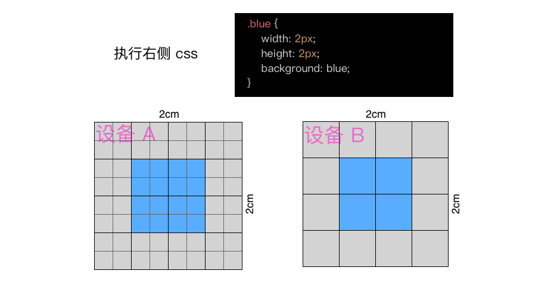
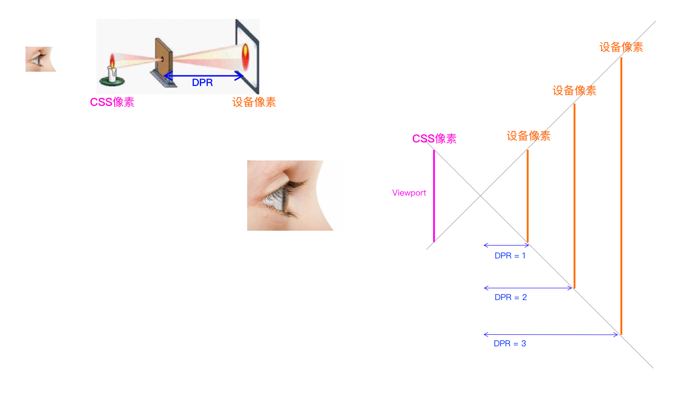
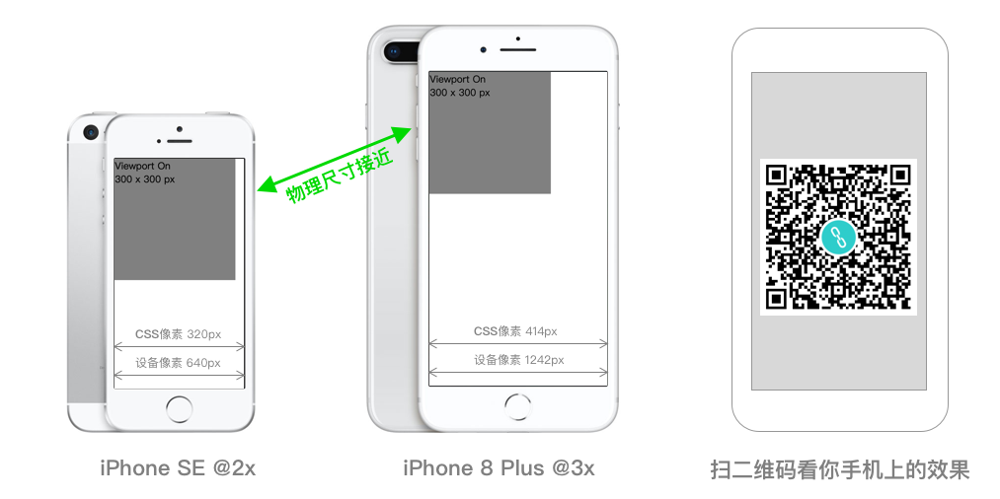
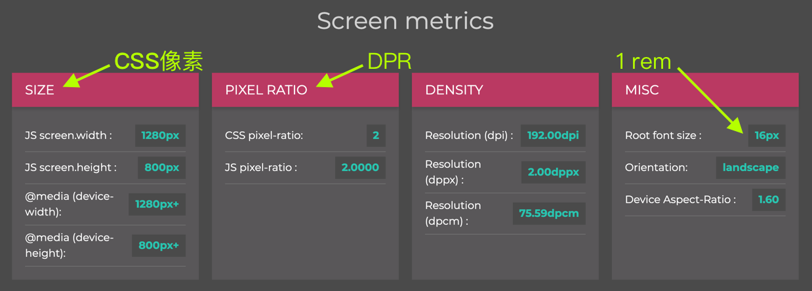
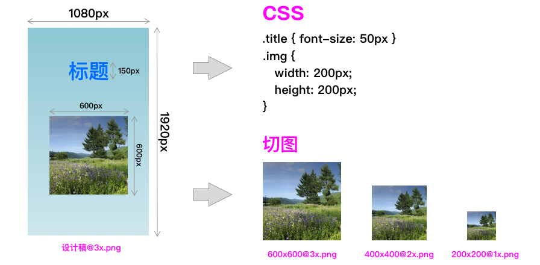

软硬件技术的高速发展成就了很多高分辨率的产品，但给用户带来了越来越小的内容（高分辨率 window 笔记本，应该深有体会）。
我们真正需要的用户体验是，高分辨率带来的 细腻的视觉体验 和不同尺寸屏幕下呢个看到 相同寸的内容。

Viewport 他来了，他可以完美解决上述问题
- MDN 解释：它提供有关视口初始大小的提示，仅供移动设备使用。
- 前端研发理解：Viewport 将 px 单位从描述 设备像素 转成 CSS像素(无限接近物理尺寸)。
🤔 理论求证
为了便于理解我准备了如下表格两个虚拟设备 A 和 B
| 设备 | 设备像素 | CSS像素 | 像素比DPR |
|---|---|---|---|
| 设备A | 8 x 8 | 4 x 4 | 2 |
| 设备B | 4 x 4 | 4 x 4 | 1 |

像素并非像素
近年来，屏幕分辨率已经涨到人眼难以区分单个像素大小的程度。例如，最近的智能手机通常具有5英寸屏幕，分辨率高达1920-1080像素（~400dpi）。因此，许多浏览器让每个 CSS像素 对应多个 硬件像素 ，以便在很小的物理尺寸上显示的页面能看清楚。最初这样做在许多触控优化的网站上有可用性和可读性问题， Peter-Paul Koch 在 A pixel is not a pixel 中写到过。
在高 dpi 屏幕上，设备像素比(DPR) = 1 的页面将被浏览器有效缩放。他们的文字将是流畅和清晰的，但位图图像可能无法利用全屏分辨率。为了在这些屏幕上获得更清晰的图像，Web开发人员可能希望以比其最终大小更高的比例设计图像（或整个布局），然后使用CSS或视口属性缩小它们。这与CSS 2.1标准一致。
📐原理图

🤓 真机效果

🖥 如何获得设备参数
获取设备参数网址：http://www.mydevice.io

或者用 Javascript 方法获得参数
- DPR：window.devicePixelRatio
- size：screen.width 和 screen.height
- Root font size（1rem）：window.getComputedStyle(document.getElementsByTagName(“html”)[0]).fontSize
💎 分析设计师提供的设计稿
1，了解要兼容的设备重要参数
| iPhone 3gs | iPhone SE | iPhone 8 Plus | |
|---|---|---|---|
| 设备像素 px | 480 x 320 | 1136 x 640 | 1920 x 1080 |
| CSS像素 px | 480 x 320 | 568 x 320 | 640 x 360 |
| DPR | 1 | 2 | 3 |
2，解读设计稿

a，标题字号为 150px，设计稿相对应的 DPR 是 3，所以实际在代码中要写 50px。
转换公式：设备像素 / DPR = CSS像素
b，位图不太一样，因为每个 CSS像素 由9个 设备像素 呈现，每个 设备像素 颜色都可以独立像素呈现不同颜色，选择比CSS像素大3倍像素的图片会非常细腻。
所以按照 DPR 提供 @3x @2x @1x 的切图，也可以只用最大尺寸的位图也是可以的，只不过对于低 DPR 的设备从服务器上获取位图增加了下载时间，但是实际效果却不会细腻。
💎 Viewport 改变了我们
| 之前 | 现在 | |
|---|---|---|
| 位图 | 对应容器宽高为100px的背景图用宽高100px的图片即可 | 对应多个DPR的多种尺寸位图 |
| 图标 | 用雪碧图 | 用自适应大小的iconfont/svg |
| 设计师 | 设计师用位图软件设计 （Photoshop） | 设计师用矢量图设计单位是CSS像素单位 输出时工具会生成 1x 2x 3x 尺寸的位图（Sketch） |
| 兼容性 | 之前只想着浏览器兼容 | 还要思考兼容设备 |
| 单位 | px, em, % | px, rem, %, em, vw/vh/vmin/vmax, calc() |
| 布局 | float, flexbox | element/bootstrap/… layout |
未来是5G时代，任何东西都有可能安装屏幕。所以我们前端人应该面向未来。